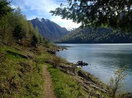
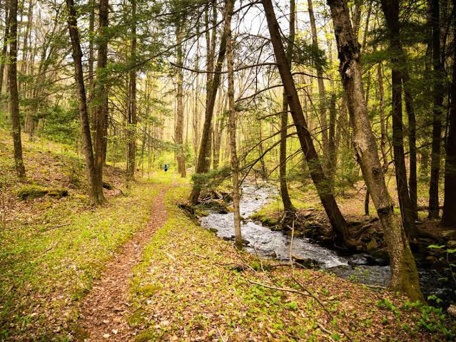

Lakeside Loop

An easy 2.5-mile loop with flat paths and lake views. Visitors rate it 4.7 out of 5.
Directions: Park at the main lot and follow the signs to the lake boardwalk.
Pine Ridge Trail

A moderate 4.8-mile hike through shaded forest with a scenic overlook. Visitors rate it 4.5 out of 5.
Directions: Take the ridge road to the trailhead and start at the wooden gate.
Trail Comparison
| Trail | Difficulty | Length | Rating |
|---|---|---|---|
| Lakeside Loop | Easy | 2.5 miles | 4.7 |
| Pine Ridge Trail | Moderate | 4.8 miles | 4.5 |